{kind=link}
The essentials in 30 seconds
- During an alert: tap POTWIERDZAM — wycisz syrenę (acknowledge — silence siren; in English mode ACKNOWLEDGE — silence siren), then Gdzie się schronić (where to shelter). GROTA shows the nearest place and the route at once. Tap PROWADŹ ➜ (navigate).
- In advance, calmly: in the Miejsca (places) tab add your home, work or your child's school, and pick up to three shelters for each. Ask the building manager whether and when they are open.
- For when there is no internet: in the Przygotuj (prepare) tab download the map of your province (Mapa i trasy — map and routes).
- Remember: GROTA is a list of places, not a promise they will be open. When you hear sirens or get an RCB alert, follow the official message.
What the points in GROTA are
They are 85,837 shelter points from the public list of Poland's State Fire Service (“Punkty schronienia w Polsce”, dane.gov.pl). The list does not say whether a point is a bunker, a shelter or a makeshift refuge, or how many people fit — the full register is not public. It does say when a point is accessible, shown by the dot colour:
🟢 Całodobowo (24/7)
Accessible around the clock, e.g. underpasses, metro stations, some underground car parks.
🟠 W określonych godzinach (set hours)
Open while the building is in use or staffed — a school, an office, a shopping centre. The hours are not in the data: check them in advance.
🔵 Na żądanie (on request)
Usually locked (a block's basement, a shared garage). In an emergency the manager or residents open it. Ask in advance who has the key.
GROTA covers all of Poland and only Poland. The list of points is on the phone, so finding the nearest one works offline too.
1. How to open GROTA
During an alert: on the alert screen tap POTWIERDZAM — wycisz syrenę (acknowledge). The siren stops and three buttons appear: Gdzie się schronić (where to shelter), Obserwuj mapę (watch the map) and Jestem bezpieczny (I am safe). Strażnik never switches the screen on its own — you choose. Gdzie się schronić opens GROTA straight on the TERAZ (now) tab and finds your position. GROTA starts loading as soon as the alert appears, so it opens at once.
At any time: the bottom tab Więcej (more) → Schronienie — gdzie najbliżej (shelter — nearest; in English mode “Shelter — nearest (in Polish)”). This opens the Mapa (map) tab.
Back to Strażnik: the ‹ Strażnik button top left, or the system “back” button. “Back” first undoes a step inside GROTA (closes a point card or panel), and only then returns to Strażnik.
At the bottom GROTA has five tabs: Mapa (map), Miejsca (places), the red TERAZ (now), Przygotuj (prepare) and Zasady (rules).


2. During an alert — the TERAZ (now) tab
TERAZ is the screen for the moment of danger. When opened it finds your position and shows the result straight away. There is nothing to set up.
Step 1. Where I am searching from
Under the quote from the Safety Guide you see “Szukam od: GPS ±5 m” (searching from: GPS ±5 m) — where GROTA measures from. If the position is wrong or GPS fails: Pozycja z GPS (GPS position — try again), Wpisz adres (type an address) or Jestem w: Dom (I am at: home — your saved place). Below, choose how you move: Pieszo (on foot), Rower (bike) or Samochód (car). Zakończ (finish) clears the position and route.
Step 2. The nearest place and the route
The big card “Najbliższe sprawdzone miejsce schronienia” (nearest checked shelter) gives the address, distance, time and type of access. The map shows the route from “Tu jesteś” (you are here) to “Cel” (destination). PROWADŹ ➜ (navigate) opens Google Maps navigation. Below there is an aerial photo (the point in the middle), Street View and Pokaż na mapie (show on map).
{kind=link}
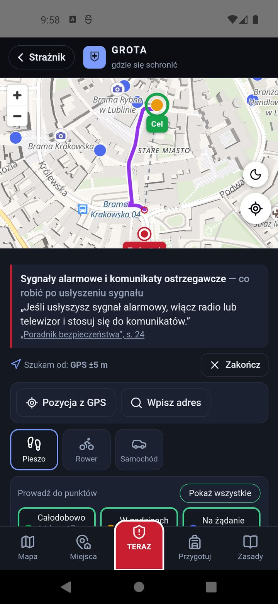
{kind=link}
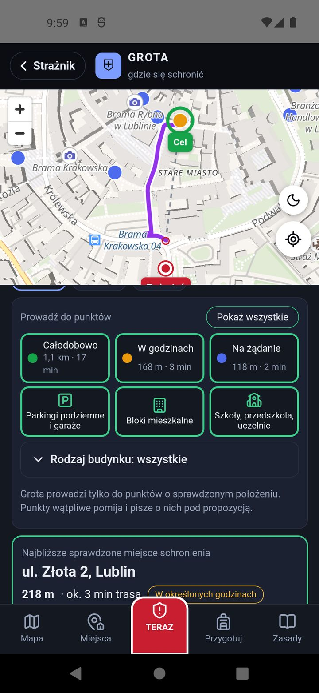
{kind=link}
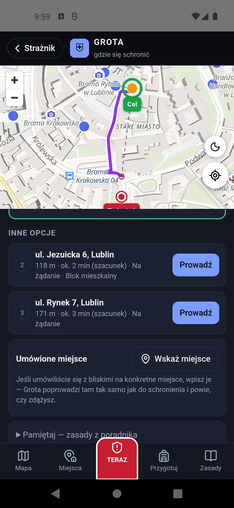
Step 3. When the first suggestion does not fit
“Prowadź do punktów” (guide me to points) shows how far the nearest point of each type is — e.g. “Całodobowo 1,1 km”, “Na żądanie 118 m”. Switch off a type that does not suit you (e.g. locked “on request” points at night) and GROTA immediately picks the nearest of the rest. The building-type shortcuts (underground car parks, blocks of flats, schools) and Rodzaj budynku: wszystkie (building type: all) work the same way.
Further down, “Inne opcje” (other options) lists the next points, numbered 2, 3… Tapping one moves it to first place, with a route. Useful when the first one is across a busy road or turned out to be locked.
GROTA only guides you to points with a checked location. If a point with a doubtful location (a pin on a lawn, not on a building) is closer, GROTA mentions it under the suggestion but does not guide you there.
Will I make it? — an alert with a time
When Strażnik knows the time until the threat (e.g. an object heading for your province), GROTA compares it with the time to get there. If by the estimate you will not make it, a red box “Według szacunku nie zdążysz” (by the estimate you won't make it) appears at the top and the route turns red. Then follow the Safety Guide advice in that box: stay in the building, away from windows, by load-bearing walls, on the lowest floor.
{kind=link}
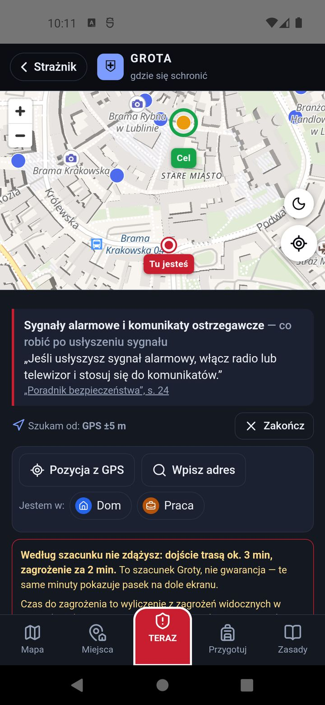
{kind=link}
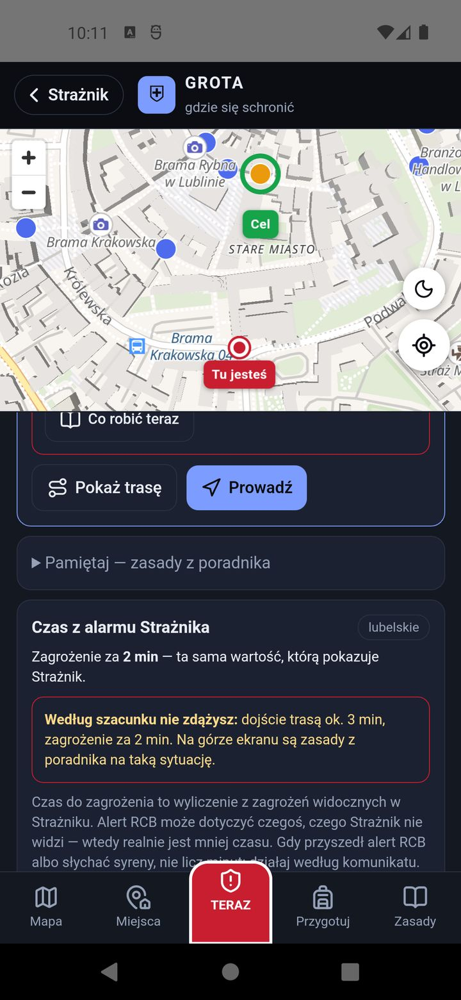
| Route colour | Meaning |
|---|---|
| green | by the estimate you will make it |
| red | by the estimate you won't make it |
| purple, teal, blue | on foot, by bike, by car — no time comparison (no alert, or Strażnik does not know the time) |
| orange | your recorded route (section 5) |
| dashed straight line | direction only, as the crow flies |
When GPS fails, is inaccurate or shows another country
- Finding the position takes a while: don't wait — tap Jestem w: Dom (I am at: home), type an address or Wskaż na mapie (point on the map).
- No location permission: GROTA tells you where to turn it on (Settings → Apps → Strażnik → Permissions → Location); meanwhile you pick the place by hand.
- A very approximate position (e.g. ±3 km): GROTA asks whether you want to pick a place or see the result anyway, and marks it as approximate.
- Outside Poland: GROTA only knows points in Poland, so instead of a route it says “Jesteś poza zasięgiem danych Groty” (you are outside GROTA's data range). If you are in Poland right by the border and the phone put you on the other side of the river, set your position by hand.
{kind=link}
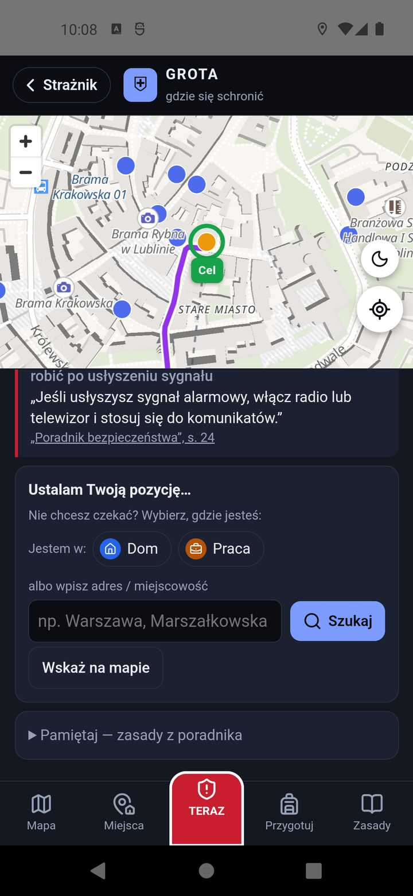
{kind=link}
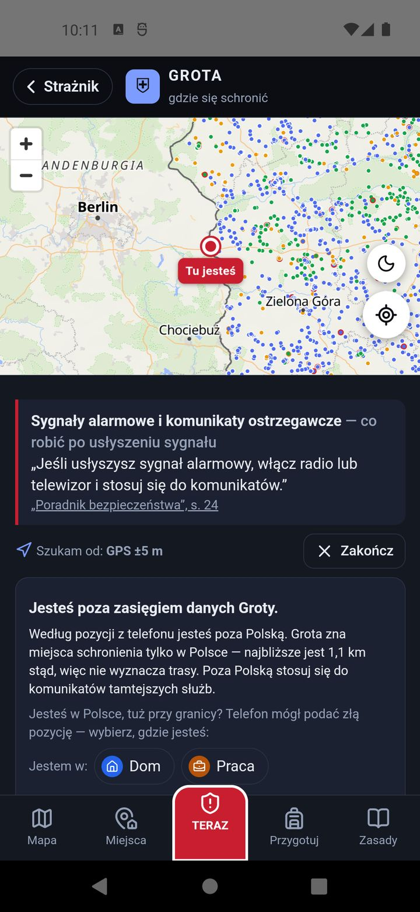
When PROWADŹ does nothing (no Google Maps or no internet): on the point card tap Narysuj trasę tutaj, na mapie Groty (draw the route here, on GROTA's map). GROTA draws an approximate route from what the phone has — along streets with an offline map, otherwise in a straight line.
3. Meeting place
If you have agreed a meeting place with your family, enter it in the “Umówione miejsce” (meeting place) card at the bottom of TERAZ: Wskaż miejsce (set the place) → an address or a point on the map. GROTA shows the distance and time on foot and by car, the route (Pokaż trasę — show route, Prowadź — navigate), and warns you when it is too far to make it in time. Usuń (remove) deletes it.
{kind=link}
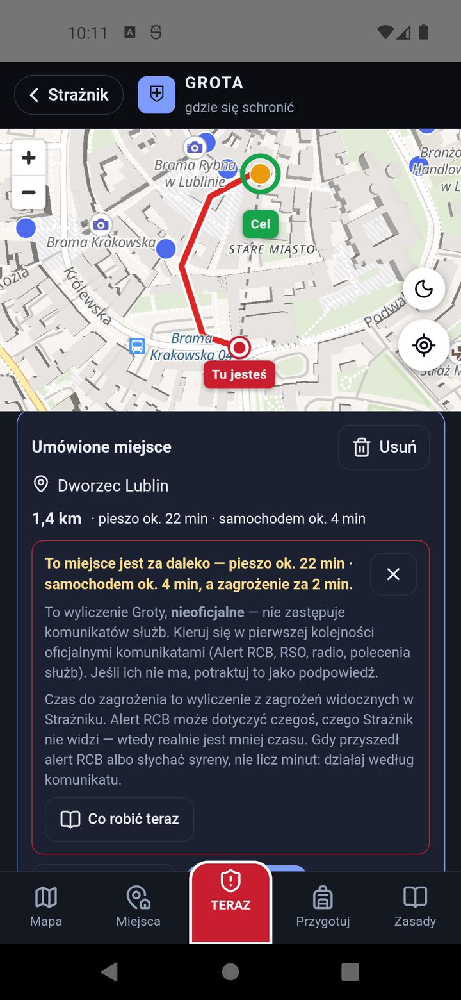
4. The Mapa (map) tab
The map shows every point in Poland. The dot colour is access (green — 24/7, orange — set hours, blue — on request) and the outline is how sure the location is (grey — checked, yellow — to be checked, red — doubtful). Map buttons: +/− zoom, moon/sun switches the light and dark map, the crosshair shows your position.
Tap a dot and the point card appears under the map: address, municipality, building type (from OpenStreetMap), access with an explanation, distance and time, location certainty, an aerial photo, Prowadź (navigate), Street View and Narysuj trasę tutaj, na mapie Groty (draw the route on GROTA's map). If you have saved places, you also see “Zapisz jako schronienie dla:” (save as a shelter for:) with buttons for your places.
{kind=link}
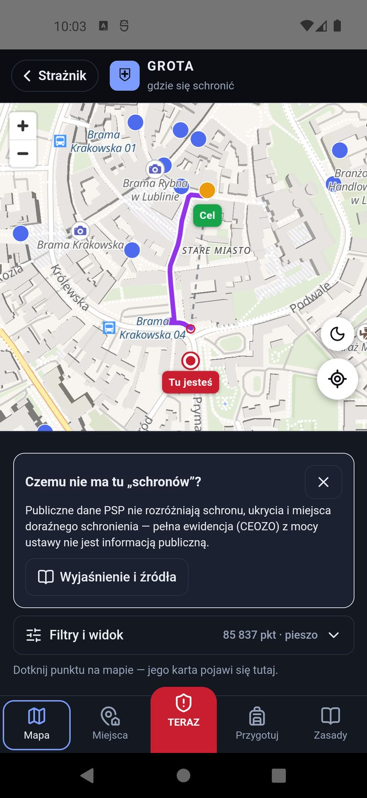
{kind=link}
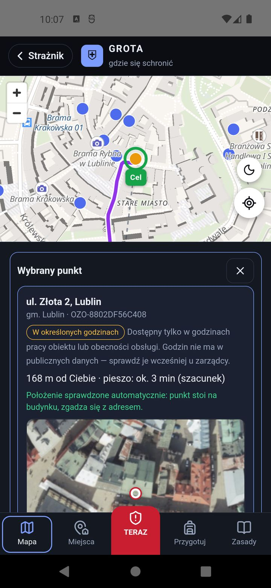
{kind=link}
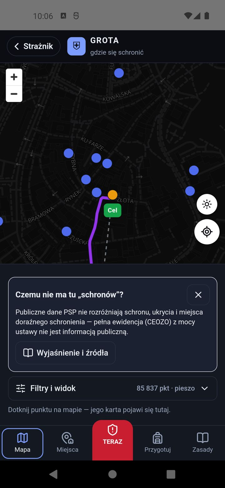
Filtry i widok (filters and view)
Filtry i widok under the map shows only selected points: by access (Całodobowo 24/7, W godzinach set hours, Na żądanie on request), by location certainty (Sprawdzone checked, Do sprawdzenia to be checked, Wątpliwe doubtful) and by building type (11 groups, e.g. underground car parks, blocks of flats, schools, hospitals). Each button toggles its group; Pokaż wszystkie (show all) selects everything, and pressed again — clears it. Here you also choose Pieszo, Rower or Samochód.
{kind=link}
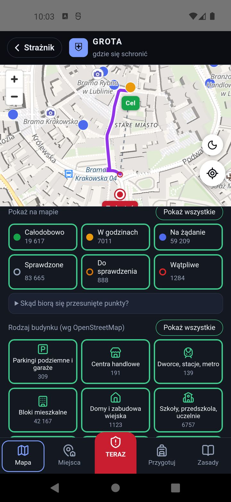
{kind=link}
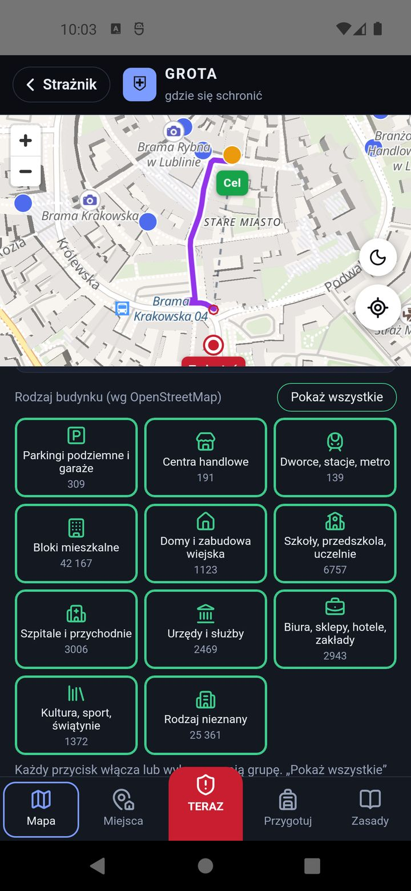
Why are there no “bunkers” here? On the first visit GROTA explains that the public PSP data does not distinguish a bunker, a shelter and a makeshift refuge, and the full register is not public by law. Wyjaśnienie i źródła (explanation and sources) leads to the Rules.
5. The Miejsca (places) tab — prepare in advance
Here you save your regular places — home, work, your child's school, family — and choose their shelters in advance. During an alert, just tap Jestem w: Dom (I am at: home) and the result is there at once, even without GPS. Places are stored only on this phone.
Adding a place
- In “Dodaj miejsce” (add a place) choose the type: Dom (home), Praca (work), Szkoła / uczelnia (school / university), Przedszkole / żłobek (kindergarten / nursery), Rodzina / bliscy (family), Działka / domek (allotment / cottage) or Inne (other).
- Enter a name and address, then Szukaj (search) — or Moja pozycja (my position) / Wskaż na mapie (point on the map).
- Tap the place's tile and in “Wybierz miejsca schronienia” (choose shelters) tick up to three points from the list of the nearest ones.
{kind=link}
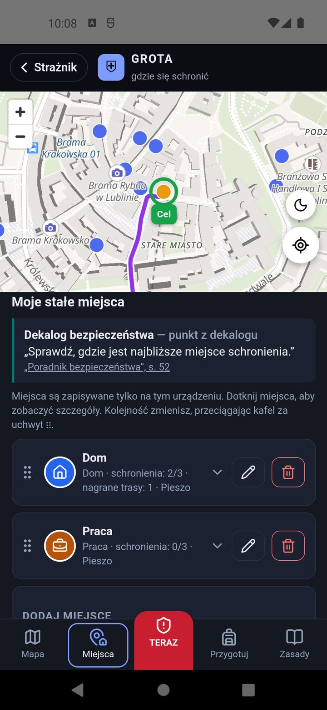
{kind=link}
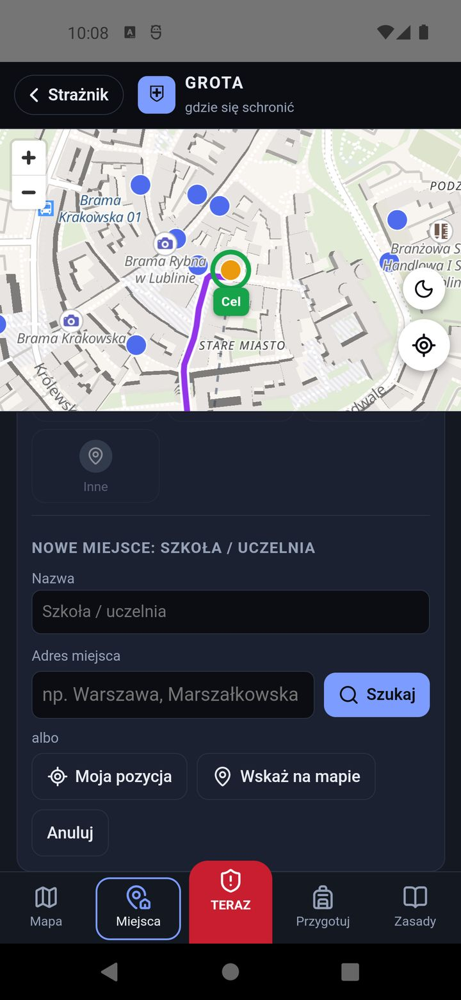
{kind=link}
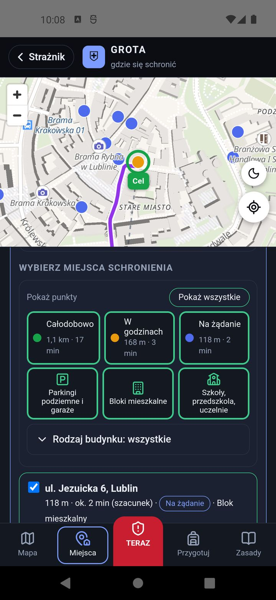
Details, notes and editing
A place's details show its location, “Moje miejsce w budynku” (my spot in the building — e.g. “ground-floor corridor, no windows”: where to hide if you can't get out in time) and the chosen shelters. Each shelter has a field “Jak wejść — godziny, kto otwiera, kontakt do zarządcy” (how to get in — hours, who opens it, the manager's contact — your note). It is worth filling in after talking to the manager. The pencil opens editing: name, location, type, your spot in the building with a tick “Sprawdziłem to miejsce na miejscu” (I checked this spot in person), a short checklist and the means of transport. Changes save themselves (“✓ Zapisano” — saved). The bin deletes a place, and the ⋮⋮ handle changes the order.
{kind=link}
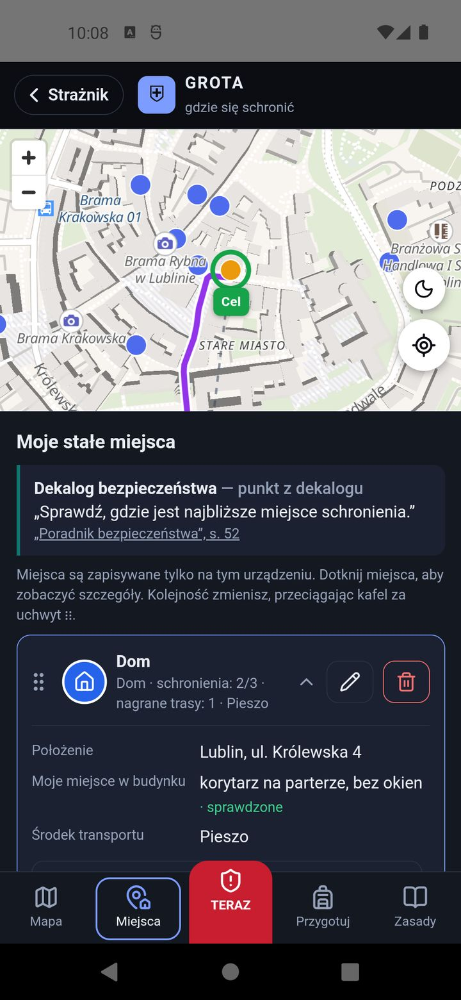
{kind=link}
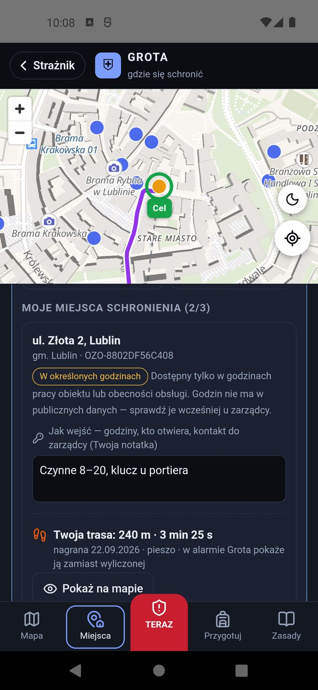
Record your own route
For each shelter you can record the route by walking it once, calmly: Nagraj swoją trasę (record your route), walk, then Zakończ i zapisz (finish and save). Keep the screen on while recording. During an alert, when you are within 300 m of that place, GROTA shows your orange route instead of the calculated one — with passages and shortcuts that are not on the map.
6. The Przygotuj (prepare) tab
Offline map — for when there is no internet
During an alert the network may be overloaded. Shelter points and distances always work, because the list is on the phone. To see streets and get a route offline, download a map in advance:
- Choose the area: Wokół miejsca (around a place — 25, 50 or 75 km around your position or a saved place), Województwo (a province) or Cała Polska (all of Poland, about 2 GB — Wi-Fi only).
- Choose what to download: Mapa i trasy (map and routes — recommended; only this lets GROTA guide you offline in the countryside too) or Sama mapa (map only — smaller; offline you get a straight line instead of a route).
- Tap Pobierz mapę (download the map). GROTA shows beforehand how much it will download and how much space it takes. Keep the app open while downloading; an interrupted download later fetches only the rest.
- Sprawdź bez internetu (check offline) pretends there is no network, so you can see what will work. Zakończ test (end test) returns to normal.
{kind=link}
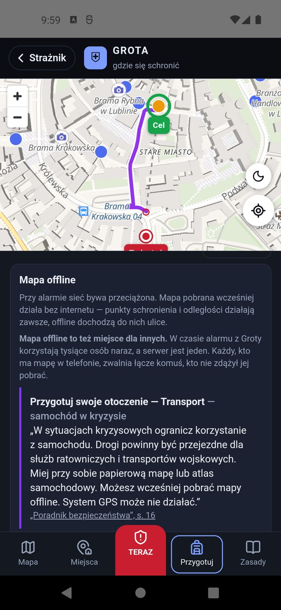
{kind=link}
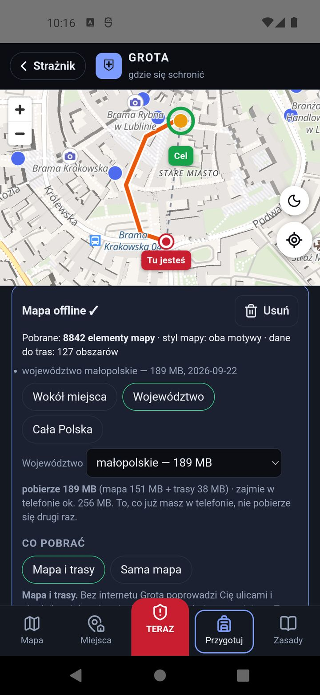
{kind=link}
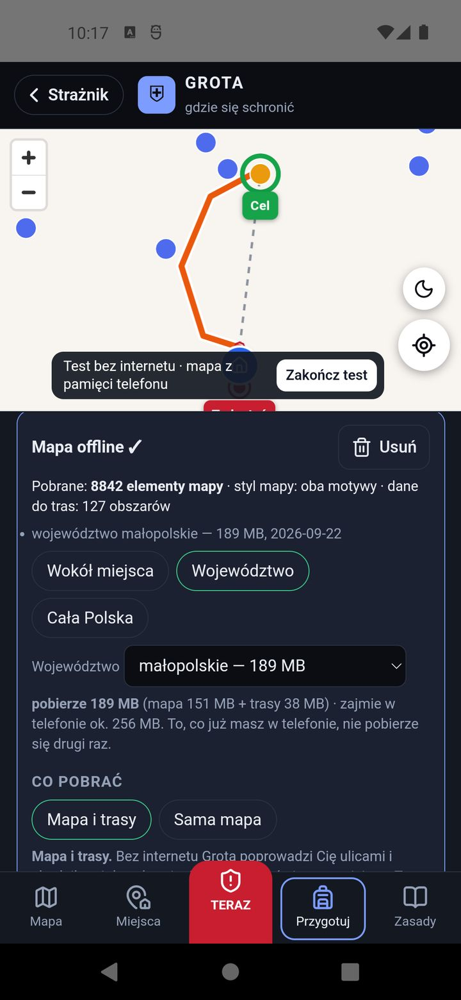
Sizes: a province from a few dozen to a few hundred MB (the list shows the exact number), all of Poland about 2 GB. Remove a downloaded map with Usuń (remove) in the same card. An offline map also leaves room for others: everyone who has it on their phone takes load off the server during an alert.
Preparation checklists
Below are 7 checklists quoted from the Safety Guide: Dom lub mieszkanie (house or flat), Zapasy domowe na minimum 3 dni (home supplies for at least 3 days), Plecak ewakuacyjny (evacuation backpack), Plan na kryzys (crisis plan), Praca (work), Szkoła (school) and Osoby potrzebujące szczególnej pomocy (people who need special help) — 36 items in all. Otwórz (open) expands a list; tick what you already have. A list's frame is red below 40%, yellow in progress and green when complete. Progress stays on the phone.
{kind=link}
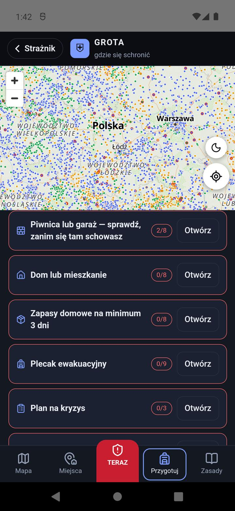
{kind=link}
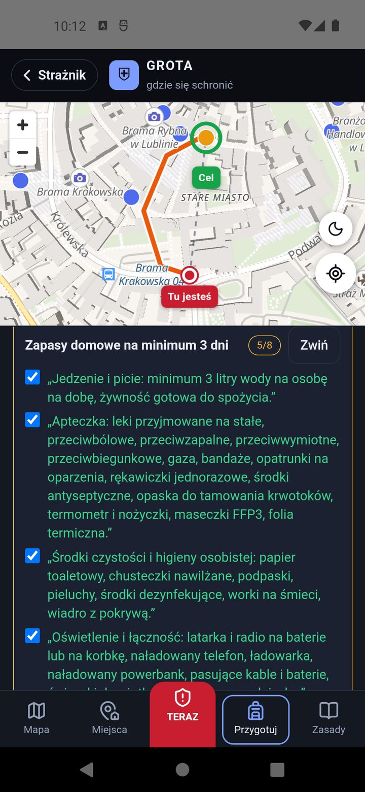
7. The Zasady (rules) tab
GROTA does not make up its own procedures. Every recommendation in the Zasady tab is a quote from the government's Safety Guide (“Poradnik bezpieczeństwa”, 1/2025) with its page number: what to do when you hear an alert signal, an air attack, shelters (what to do if you can't make it in time), evacuation, preparing your surroundings and a crisis plan. Then come explanations: what the guide does not specify, why GROTA has no “bunkers”, the limits of the data, where shifted points come from, and the sources. Zamknij (close) returns to the previous tab.
{kind=link}
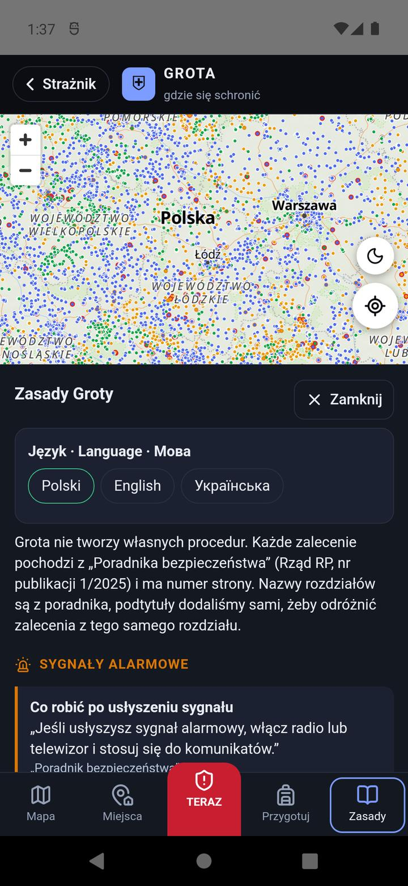
8. What works offline
| Feature | Without internet |
|---|---|
| Shelter points, the nearest point, distance | always works |
| My places, notes, recorded routes, checklists | always works |
| Map with streets | only after downloading an offline map |
| Route along roads | only with Mapa i trasy (map and routes) downloaded; otherwise a straight line |
| Address search | knows only towns and villages (the position is the centre of the place) |
| PROWADŹ (Google Maps), Street View, aerial photo | does not work |
9. Questions and problems
Are these bunkers?
Unknown. The public PSP list does not distinguish a bunker, a shelter and a makeshift refuge, and the full register is not public.
Will the point be open?
GROTA does not know. “On request” points are usually locked, and “set hours” ones are open only while the building is in use. Ask the building manager in advance and write the answer in the “Jak wejść” (how to get in) note at your place.
Why does GROTA guide me to a farther point, not the closest dot?
The closer dot has a doubtful location (the pin is next to a building) or does not match the type you chose. GROTA says so under the suggestion.
The pin is on a lawn or in a car park.
That is an error in the PSP source data, not in GROTA. Look for the building next to it. You can report it to the municipality or the fire service — a fix at the source corrects it in every app.
PROWADŹ does nothing.
No Google Maps or no internet. Use Narysuj trasę tutaj, na mapie Groty (draw the route on GROTA's map) on the point card.
The aerial photo does not show.
In version 1.7.68 the aerial photo does not appear: the GUGiK service changed its address. The fix comes in the next update, including older Android phones. The screenshots in this guide show how the card looks after the fix.
How does GROTA know how much time I have? Why is “make it / won't make it” sometimes missing?
From Strażnik's alert — from the threats Strażnik can see. When the alert rests only on indirect sources or Strażnik does not know the time, GROTA does not judge or urge. An RCB alert may concern something Strażnik cannot see, so with an RCB alert or sirens, don't count minutes.
I am abroad or by the border.
GROTA knows only Poland. By the border, if the phone put you on the other side of the river, set your position by hand.
I changed my home address and the shelters disappeared.
That is on purpose: after moving an address by more than 3 km GROTA asks whether to remove the shelters from the old area.
I have a new phone — where are my places?
Places, notes and routes stay only on the phone where you saved them. On a new one, add them again.
How do I delete everything?
Remove the offline map in Przygotuj → Usuń, places with the bin in Miejsca, the meeting place with Usuń. Everything: Android Settings → Apps → Strażnik → Storage → Clear data (this also clears Strażnik's settings, e.g. the province for alerts).
When will GROTA be on iPhone and in other languages?
English and Ukrainian versions are on the way; iPhone comes in a later release. GROTA will not be on the website: the list of points is well over ten MB of data that makes sense on a phone.
10. Privacy and sources
GROTA has no account, no ads and no analytics. The list of points and the search for the nearest one run on the phone. Places, notes, recorded routes, checklists and the offline map stay on the phone. Only what a given feature needs leaves the phone:
- a route on the map — your position and the chosen point go to the public FOSSGIS routing server (OSRM, OpenStreetMap data);
- address search — the typed address goes to the GUGiK service, after you press “Szukaj”;
- aerial photo — an orthophoto tile from Geoportal (GUGiK) for the point you view;
- the base map — OpenFreeMap tiles for the area you view (nothing is sent with an offline map);
- offline map packages — downloaded from Strażnik's server;
- Google Maps and Street View — only when you tap the button.
Details: privacy policy.
Data: Polish State Fire Service HQ, “Punkty schronienia w Polsce”, dane.gov.pl, CC BY 4.0 · building types: © OpenStreetMap (ODbL) · rules and checklists: “Poradnik bezpieczeństwa”, Government of Poland, gov.pl, CC BY-SA 4.0 · map: OpenFreeMap, © OpenStreetMap · routes: FOSSGIS (OSRM) · addresses and orthophoto: GUGiK.